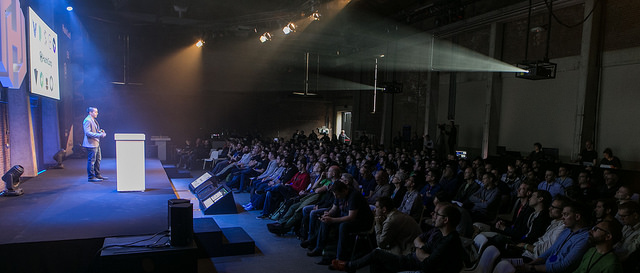
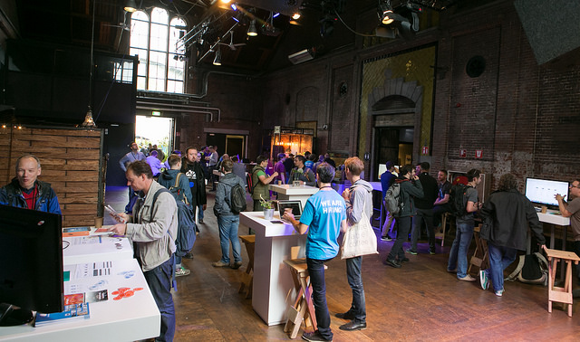

Few days ago I was in Amsterdam, in the lovely Hashiconf EU. This conference fulfilled all my expectations about hashi tools and the devops world. The conference was organized by Xebia with the help of Hashicorp and it was awesome, everything was great: venue, sound, food, talks and the party!
Let me explain why I went to this conference; the main reason is that nowadays I'm doing a lot of devops, the vision of Hashicorp is very similar to my ideas/problems so I'm learning a lot from them. In the other hand a lot of talks were case studies from companies, so I learnt from other people's problems.
The conference started with Mitchell Hashimoto's keynote, and I want to emphasize the following points:
- The initial support to import in Terraform.
- Maps and list in Terraform.
- Terraform state cli.
- Vault code audit and the new features added in 0.6.
Related with Nomad, they did a good improvement release, nomad plan is a boost to the project and being able to run 1M containers in less than 300 seconds is a good selling point. Also, he announced that Vektra joins Hashicorp and they are going to release a new log management tool called Current.
The second keynote was from Nicki Watt from the London based OpenCredo. I loved this talk! Real problem was described from start and solutions were explained with the proper balance between code and theory. The integration and workflow between Terraform, Vault, Cloudinit gave me good insights for our infrastructure. In the other hand I got the following quote, that is great:
The only thing constant in life is change -- François de la Rochefoucauld
One of the topics that I was more interested was Nomad. A good review was given by Diptanu, he has a lot of experience in schedulers. In my opinion all schedulers will be a good trend to follow, and all related with the microservices. Some keypoints about it:
- It's simpler than other solutions.
- It's not as complete as kubernetes, but fill the gap for a lot of companies.
- I can't fully get how nomad can export public interfaces or network constraints.
- Traffic shaping it's good but not sure how nomad will work with media traffic.
- Restart on jitter is great.
- Nomad fs is good, but need to change the paradigm in support teams.
- All this orchestrators lose the way about dependency requirements between microservices.
Vault was another hot topic in the conference. This secret manager is great and the following uses are marvelous for all the companies:
- SSH credentials
- ACL policies
- DB credentials
A lot of people use Vault on production environments, so I'll give a try soon. If you want to see an example, this is a good repository to start.
Day two started with Anne Currie keynote, it was awesome talk. The way how I think about resource efficiency was changed after I heard this keynote. She went into details around container/server metadata, lavel-schema.org and microbadger.com was introduced by her to all of us.
Packer was mentioned in almost all the talks. OS Hardening using packer was presented by Xebia, they introduced a lot of security related tools, as for example ansible-lockdown. Faster and reliable deploys was explained by Vik Bhatti from Beamly, for me, it was one of the best talks in the conference, I must insight the following:
- Smolder test framework: Looks great and maybe I'll do something similar for sip.
- They introduced consul distributed locks, I've never realized of this problem before.
- Consul KV locks and they daemon MarcoPolo => Great way to save config in runtime.
- He introduced SE4: Simple Spec for Service Status and Health
Day two finished with Nomad Demo by Kelsey Hightower, live coding terraform provider and the final keynote about security from nuna.com <https://www.nuna.com/>__.
I need to say big thanks to all the people that I spoke with and thanks to Jana, Hashicorp and Xevia for organized this awesome conference.
Finally, there are few things that I think should be improved so I will write them down here just in case it could be helpful:
- In my opinion, the talks finished too early in both days. I missed 1 or 2 more talks to finish around 17:30 or 18:00.
- I missed Best-practices talks around products, I mean, I would love to hear tips around Consul or Packer by the head of the projects. For example Diptanu talk was great around Nomad.
This was my summary about Hashiconf EU2016. Thanks for reading!
PS: All photos are from Hashicorp flickr page
PS2: Videos are now online